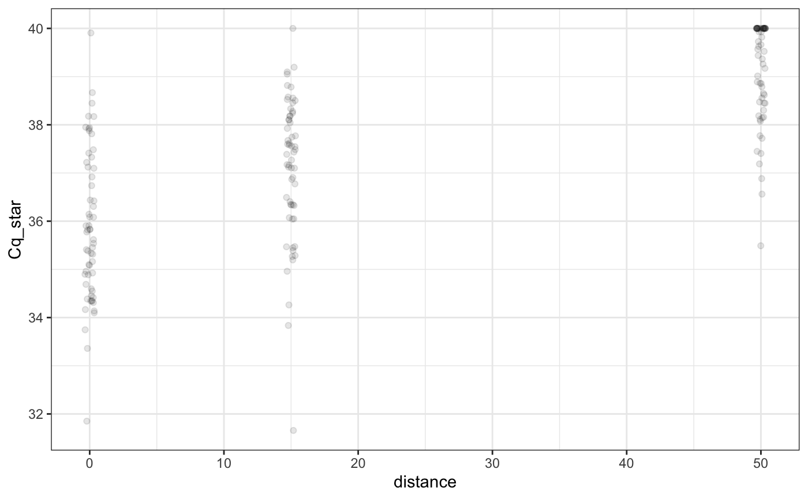
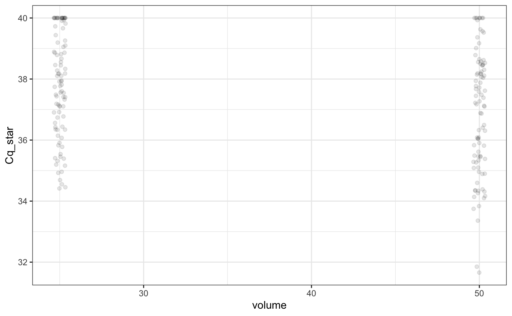
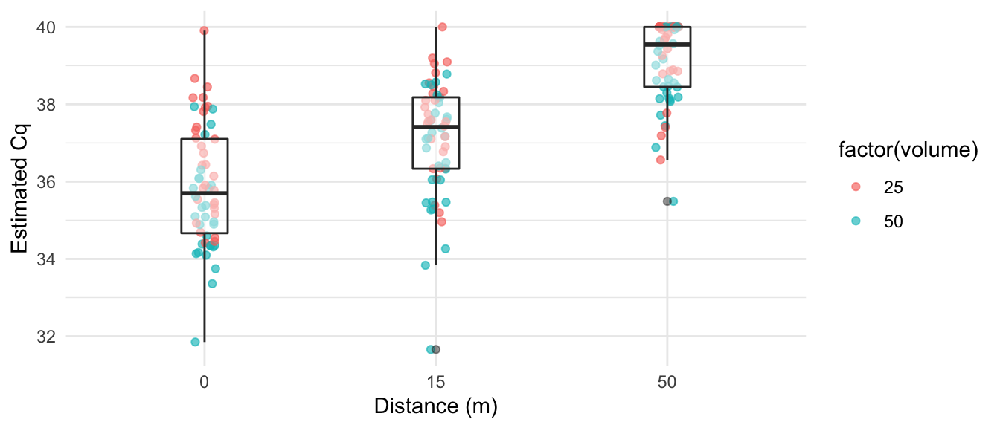

artemis
simulation.RmdSimulating data is extremely useful. It’s like a sandbox to play and practice in without the anxiety of wasting resources, allowing us to test assumptions, visualize model relationships, and conduct power analyses on hypothetical experiments.
The artemis package includes two flexible functions for simulating data: sim_eDNA_lm() and sim_eDNA_lmer(). These functions use the same data generation process outlined in the Getting Started with artemis vignette).
In the sections that follow, we will go through the three steps of the data simulation process in artemis:
Creating a list of predictor variables and their levels
Creating a vector of beta values for each predictor variable
Calling the sim_eDNA_*() functions to simulate data, depending on the structure of the model (fixed or mixed effects).
Once generated, simulations can be stored as an object in R. We can manipulate, summarize, and plot them.
In order to simulate data, we first must provide a list of variables in our survey data and their associated levels. For example, if the hypothetical survey or experiment had varying levels of the variables distance, volume,tech_rep, and rep, we might create the following complete list of variables:
vars = list(Cq = 1,
Intercept = 1,
distance = c(0, 15, 50),
volume = c(25, 50),
tech_rep = 1:10,
rep = 1:3)There is nothing special about the names used here, other than that they must be matched in the formula eventually expressed in sim_eDNA_lm(). The variables can have as many levels as we like, and be categorical or continuous (we would wrap categorical variables with as.factor()).
We included two dummy variables in our list: one for the response (“Cq”), and one for the intercept. The response dummy variable is used internally by the simulation functions to create the model matrix. We could have omitted the intercept variable here, but the model.matrix() function that gets called downstream will create one by default, so it’s good practice to include it in our variable list.
Next, we must provide effect sizes (betas) for the variables we we plan to include in the model formula. The values we assign the betas will no doubt depend on our reasons for doing the simulation. If we have previous model results for the effects of distance and volume, for example, we might use those for our betas vector:
By default, the first beta value in betas will be considered the term for the intercept. The names of the betas don’t need to be the same as they are in the vars list or the model formula expression, but the sim_eDNA_*() functions do reference the betas vector with respect to the model formula, so the order of the variables does need to match, and we need one beta for each predictor in the model formula.
When specifying the betas values, it helps to remember that all the model parameters are on the scale of \(log[eDNA]\), including the intercept. Here we specified the intercept to be -10, which came from previous modeling results but also corresponds to exp(-10)\([eDNA]\). This is a very small number, and thus a proxy for eDNA that is very rare in the environment before any covariates are considered. Often if we’re getting simulation results we find bizarre or surprising, the scale of the betas is the place to start debugging.
sim_eDNA_*() functions to simulate dataWith our variable list and our betas decided upon we’re ready to simulate data! For fixed-effects variables, we use the sim_eDNA_lm() function. This function takes a model formula (with syntax identical to that used in the lme4 package), the variable list and the betas vector, but it also requires the parameters from a standard curve equation for the conversion formula between \(log[eDNA]\) and Cq values to the simulation function, as well as the measurement error on Cq (sigma_Cq):
set.seed(1234)
ans = sim_eDNA_lm(Cq ~ distance + volume,
variable_list = vars,
betas = betas,
sigma_Cq = 1.5,
std_curve_alpha = 21.2,
std_curve_beta = -1.5)The returned object from the sim_eDNA_* functions is a list containing the latent variable ln_conc, the equivalent Cq value before truncation and measurement error Cq_hat, and the estimated Cq value following the truncation and measurement error Cq_star:
str(ans, max.level = 3)
#> Formal class 'eDNA_simulation' [package "artemis"] with 9 slots
#> ..@ ln_conc : num [1, 1:180] -10.1 -10.8 -12.6 -9.6 -10.3 ...
#> .. ..- attr(*, "dimnames")=List of 2
#> ..@ Cq_star : num [1, 1:180] 35.4 38.5 38.8 35.8 33.8 ...
#> .. ..- attr(*, "dimnames")=List of 2
#> ..@ formula :Class 'formula' language Cq ~ distance + volume
#> .. .. ..- attr(*, ".Environment")=<environment: R_GlobalEnv>
#> ..@ variable_levels:List of 6
#> .. ..$ Cq : num 1
#> .. ..$ Intercept: num 1
#> .. ..$ distance : num [1:3] 0 15 50
#> .. ..$ volume : num [1:2] 25 50
#> .. ..$ tech_rep : int [1:10] 1 2 3 4 5 6 7 8 9 10
#> .. ..$ rep : int [1:3] 1 2 3
#> ..@ betas : Named num [1:3] -10.6 -0.05 0.02
#> .. ..- attr(*, "names")= chr [1:3] "intercept" "distance" "volume"
#> ..@ x :'data.frame': 180 obs. of 3 variables:
#> .. ..$ (Intercept): num [1:180] 1 1 1 1 1 1 1 1 1 1 ...
#> .. ..$ distance : num [1:180] 0 15 50 0 15 50 0 15 50 0 ...
#> .. ..$ volume : num [1:180] 25 25 25 50 50 50 25 25 25 50 ...
#> ..@ std_curve_alpha: num 21.2
#> ..@ std_curve_beta : num -1.5
#> ..@ upper_Cq : num 40We can inspect empirical summaries of marginal distributions in the simulations with summary(),
summary(ans)
#> variable level 2.5% 50% 97.5% mean p_detect
#> 1 (Intercept) 1 33.96 37.57 40.00 37.36 0.8667
#> 2 distance 0 33.54 35.70 38.56 35.86 1.0000
#> 3 distance 15 34.04 37.41 39.15 37.11 0.9833
#> 4 distance 50 36.71 39.55 40.00 39.10 0.6167
#> 5 volume 25 34.58 37.92 40.00 37.83 0.8111
#> 6 volume 50 33.45 37.20 40.00 36.89 0.9222…which summarizes the response (Cq on its natural scale) across each level of the variables used to simulate the data.
WARNING: these marginal effects can be misleading in cases where interactions are simulated; if you have interaction effects, additional analysis is recommended.
The last column of the table returned by summary is the percent of observations that represented positive detections, i.e. a Cq value below the upper cycle threshold for non-detection (set to 40 by default). In the output above, 100% of the simulated data with distance = 0 was below 40.0.
By default, the sim_eDNA_* functions will only simulate one instance of the hypothetical survey/experiment, but we can easily simulate many datasets by adjusting the n_sim parameter. This becomes especially useful when we want to do power analyses on simulated results.
ans2 = sim_eDNA_lm(Cq ~ distance + volume,
variable_list = vars,
betas = betas,
sigma_Cq = 1,
std_curve_alpha = 21.2,
std_curve_beta = -1.5,
n_sim = 500) # specifies the number of simulated datasets to generateWhen multiple simulations are requested, each of these will be stored in a matrix, with each column representing a single simulated instance.
The results of the simulations can be plotted with plot():

Similar to summary(), each plot panel shows the marginal distribution of the response (either Cq or \(log[eDNA]\)) across the levels of the variables used to simulate the data.
plot() is a generic method intended for quick visualization of simulations. When we wish to create custom plots, we can convert a simulated dataset to a dataframe by calling as.data.frame() or data.frame() on the simulation object, and then plot them with our method of choice. Here is an example using ggplot2:
simsdf <- data.frame(ans)
# custom plot of simulated data
ggplot(simsdf, aes(x = factor(distance), y = Cq_star)) +
geom_jitter(aes(color = factor(volume)), width = 0.05, alpha = 0.65) +
geom_boxplot(alpha = 0.5, width = 0.2, size = 0.5) +
theme_minimal() +
labs(x = "Distance (m)", y = "Estimated Cq")
To simulate from a mixed-effects model, we use the function sim_eDNA_lmer(). Random effects are specified using the syntax of the lme4 package, e.g. (1|random effect):
ans3 = sim_eDNA_lmer(Cq ~ distance + volume + (1|rep) + (1|tech_rep),
variable_list = vars,
betas = c(intercept = -10.6, distance = -0.05, volume = 0.01),
sigma_Cq = 1,
sigma_rand = c(0.1, 0.1), #stdev of the random effects
std_curve_alpha = 21.2,
std_curve_beta = -1.5)When we are simulating data with random effects, we must provide the standard deviation of the random effects (sigma_rand, a vector containing one value for each random effect beta), in addition to the information for the fixed effects.
Random effects are assumed to be generated from a normal distribution for these simulations using this standard deviation (sigma_rand). When n_sims > 1, different random effects are generated for each simulation.
By default, the simulation functions construct a model matrix assuming a complete block design (i.e. every level of each variable is represented). If we want to simulate data for an incomplete block design, we can specify our own variable data.frame, X, to create a model matrix.
When we specified the vars above, we included many variables that we did not use in the formula. By design, the simulation and modeling functions ignore extra variables in the variable_list or data inputs. This is just a workflow perk; it allows us to create a comprehensive list of variables we might be interested in, and then we only need adjust the model formula to change the simulations.
Sometimes we get simulation results that seem very surprising, and often our first instinct is to suspect the model. When this happens, it can be helpful to remember that the model underlying the simulation functions is highly deterministic to the expected value - which is to say that barring any bugs in the code, there is no stochasticity in the calculations that artemis performs; they are mathematically sound when the pieces are right. There is a random component in simulating the random error, but even that should play out predictably for us. Thus if we’re getting surprising or nonsensical simulations, the trouble probably lies with the assumptions or the data we provided to the model. When we go to look for the source of the unexpected behavior, then, the input data is almost always the best place to start.
—